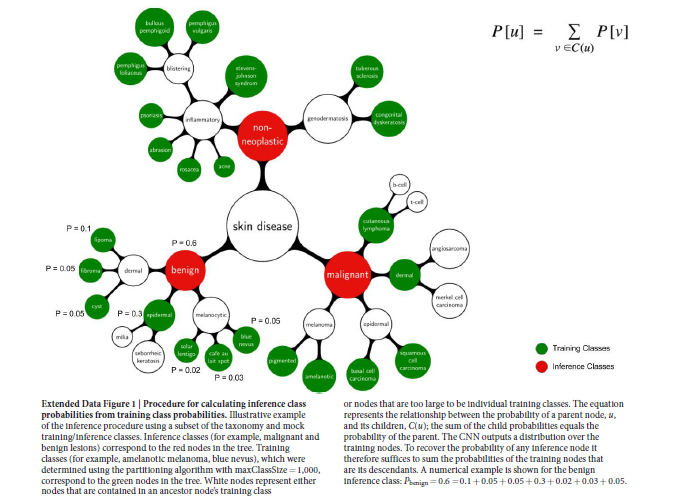
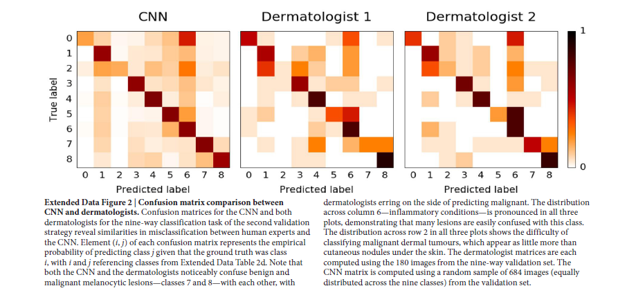
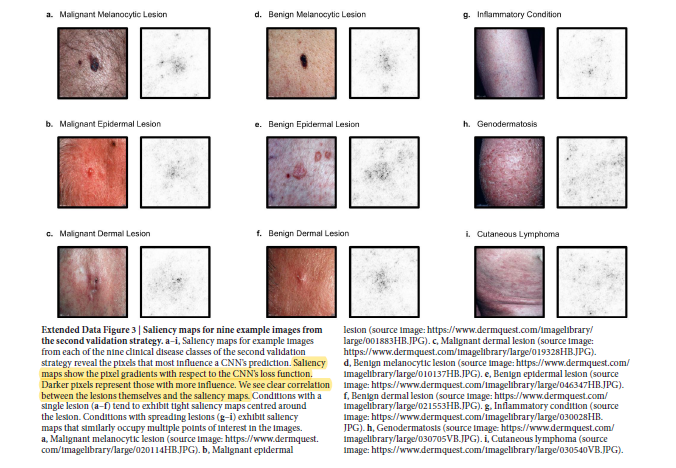
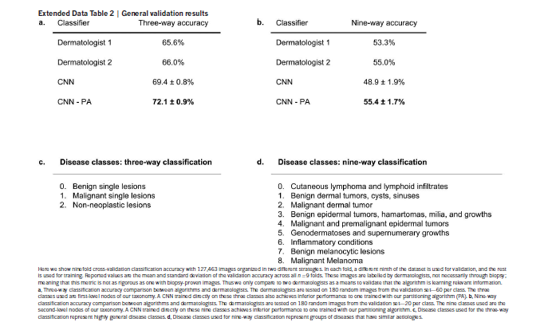

Dermatologist-level classification of skin cancer with deep neural networks
Esteva A, Kuprel B, Novoa R A, et al. Dermatologist-level classification of skin cancer with deep neural networks[J]. Nature, 2017, 542(7639): 115.
分类：角质形成细胞癌（keratinocyte carcinomas）vs 良性脂溢性角化病（benign seborrheic keratoses）；恶性黑色素瘤 vs 普通的痣
Datasets
Taxonomy
根据外形和临床表现，将这2,032种皮肤病从中心向叶子节点扩展分类。
三个根结点表示一般疾病：良性肿瘤、恶性肿瘤、无肿瘤，作为第一验证策略。根结点的孩子结点代表具有相似临床治疗方案的疾病，作为第二验证策略
The root nodes are used in the first validation strategy and represent the most general partition. The children of the root nodes (that is, malignant melanocytic lesions) are used in the second validation strategy, and represent disease classes that have similar clinical treatment plans.
Data preparation
测试集和验证集中的模糊图像和far-away图像被移除，但训练集中保留。
数据集中包含统一损害的不同视角图像，或同一病人身上相似损害的不同图像。这些图像在划分训练集和验证集时不会混淆。
采用图像EXIF元数据，存储特定信息和由CNN特征检索到的最近邻图像，创建一个无向图，相连的图像定义为相似的。图中连接的图像不能被划分到训练集/验证集。测试集均来自独立的、高质量的斯坦福医院。测试集和训练集/验证集之间不存在重合（同一损伤的不同视角）
- Exif：Exif 是一种图象文件格式，它的数据存储与 JPEG 格式是完全相同的。实际上 Exif 格式就是在 JPEG 格式头部插入了数码照片的信息，包括拍摄时的光圈、快 门、白平衡、ISO、焦距、日期时间等各种和拍摄条件以及相机品牌、型号、 色彩编码、拍摄时录制的声音以及全球定位系统（GPS）、缩略图等。简单地Exif=JPEG+拍摄参数。
Sample selection
Disease partitioning algorithm
递归算法，利用分类法生成训练类别（疾病具有临床或视觉上的相似性），仅有一个超参数maxClassSize。
- 避免产生过于细粒度的训练类别，导致没有足够的数据来正确学习;
- 避免产生过于粗糙的训练类别，导致数据量过多的类别，算法会偏向于它们
提出一种新的皮肤病分类方法，将2,032种皮肤病归类为757种训练分类，再归纳为9/3种推理分类，经过对比可知，此方法可以提高分类精度
Training algorithm
迁移学习：在ImgaeNet上预训练的Google’s Inception v3 CNN，修改最后分类层的参数，训练所有层的参数。
参数及数据增强
- All layers of the network are finetuned using the same global learning rate of 0.001 and a decay factor of 16 every 30 epochs.
- We use RMSProp with a decay of 0.9, momentum of 0.9 and epsilon of 0.1.
- During training, images are augmented by a factor of 720. Each image
is rotated randomly between 0° and 359°. The largest upright inscribed rectangle
is then cropped from the image, and is flipped vertically with a probability of 0.5.
Inference algorithm
每个推理类别都是一个包含后代（特定训练结点）的结点。（红色结点时推理类别，绿色结点是训练类别）
Therefore, to recover the probability of any inference node we simply sum the
probabilities of its descendant training nodes

Confusion matrices
shows the confusion matrix of our method over the nine classes of the second validation strategy (Extended Data Table 2d) in comparison to the two tested dermatologists.

Saliency maps
为可视化网络在预测的时候集中到哪些像素，可视化显著性图。
By taking the L1 norm of this input layer loss gradient across the RGB channels, the resulting heat map intuitively represents the importance of each pixel for diagnosis

Sensitivity–specificity curves with different questions
每个皮肤科医生被问及他们是否会对病变进行活组织检查/治疗或使患者放心。 这个问题的选择反映了皮肤科医生必须执行的实际临床任务 - 决定是否继续医学分析病变。 一个类似的问题要问皮肤科医生，虽然临床意义不大，但如果他们认为病变是恶性或良性的话。
In the epidermal lesions test, the CNN is just above one standard deviation above the average of the dermatologists, and in both melanocytic lesion tests the CNN is just below one standard deviation above the average of the dermatologists.
